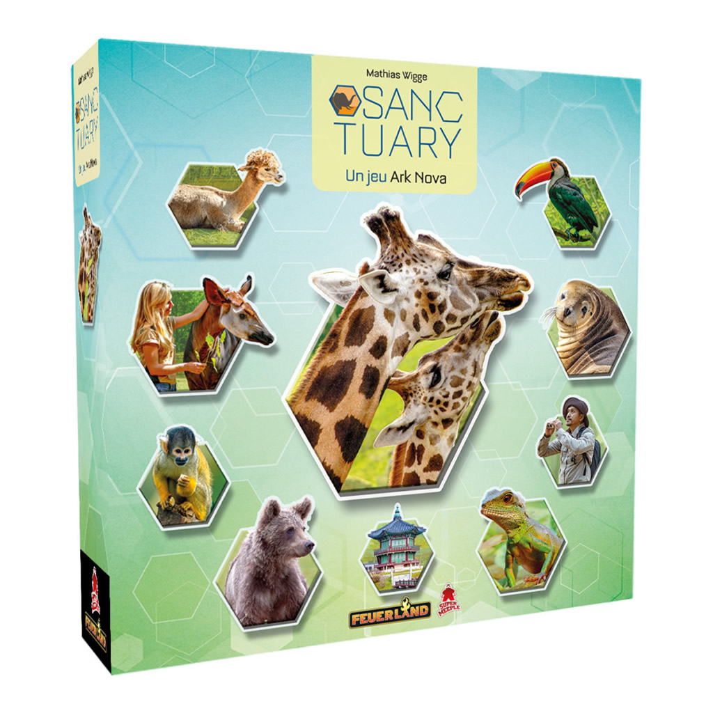
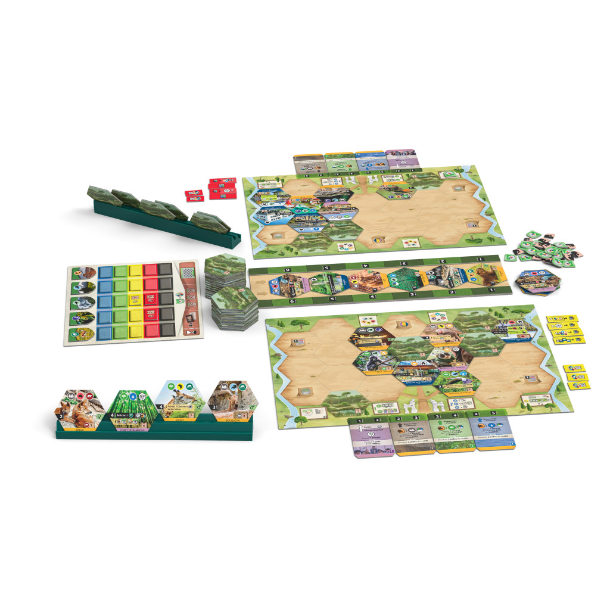

Sanctuary est un jeu de stratégie et de placement de tuiles où chaque joueur construit progressivement son propre zoo moderne. À chaque tour, on choisit une tuile dans une offre commune puis on utilise une carte action pour jouer animaux, bâtiments ou projets. L’optimisation des placements et des actions est essentielle pour progresser efficacement.
Le jeu comprend de nombreuses tuiles représentant animaux, équipements et projets, des plateaux individuels de zoo, des cartes d’action et divers jetons. L’univers s’inscrit dans une approche écologique moderne : les joueurs gèrent un parc scientifique visant à préserver la biodiversité tout en attirant les visiteurs.
La partie se termine lorsqu’une condition de fin est atteinte, généralement liée à l’avancement sur les pistes de progression ou à certains objectifs accomplis. Les joueurs comptabilisent alors leurs points issus des animaux, des projets et des objectifs de conservation. Celui qui obtient le score le plus élevé remporte la partie.
- Recommandé au Spiel des Jahres 2026
12 ans
joueurs
heure
Prix constatés le 27/05/2026